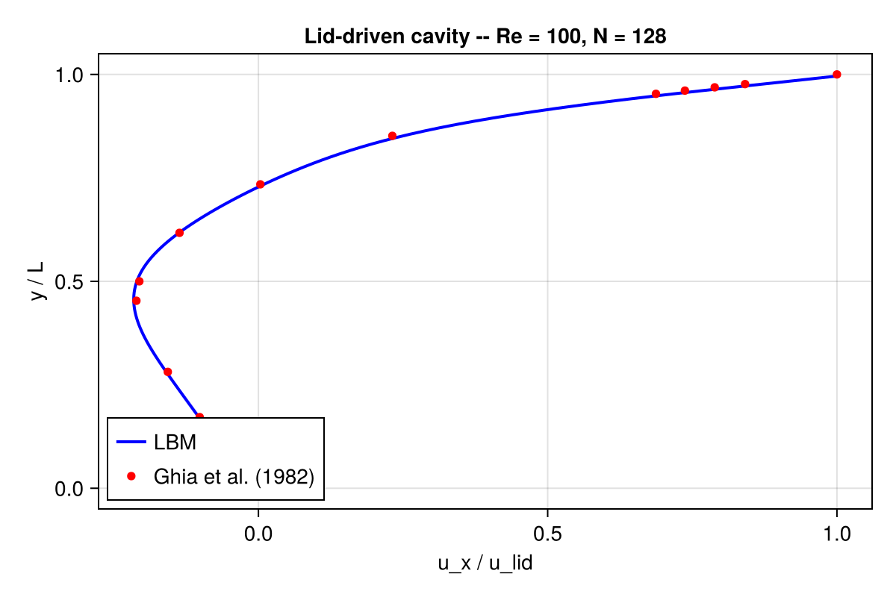

Getting started
This page walks you through your first Kraken.jl simulation end-to-end: installing the package, running the classic 2D lid-driven cavity, looking at the result, and then pointing you to the parts of the documentation that match your interests.
If you already know Julia but have never touched a Lattice Boltzmann solver, this is the right place to start.
1. Install Kraken.jl
From a Julia REPL (Julia 1.10 or later):
using Pkg
Pkg.add(url="https://github.com/lauguimel/Kraken.jl")Or, if you have cloned the repository and want a development checkout:
using Pkg
Pkg.activate("/path/to/Kraken.jl")
Pkg.instantiate()See Installation for GPU setup (Metal on Apple Silicon, CUDA on NVIDIA).
2. Your first simulation
Kraken.jl uses a small DSL called .krk to describe cases. The repository ships with a ready-to-run lid-driven cavity at examples/cavity.krk. Load it, inspect the parsed setup, then run it:
using Kraken
# Parse the .krk file into a SimulationSetup
setup = load_kraken("examples/cavity.krk")
# Inspect what we are about to run
println("Case: ", setup.name)
println("Lattice: ", setup.lattice,
" grid: ", setup.domain.Nx, "×", setup.domain.Ny,
" steps: ", setup.max_steps)
# Run on CPU (default). On Apple Silicon / NVIDIA, pass a GPU backend.
result = run_simulation(setup)
# A quick diagnostic: peak speed in the cavity
using Statistics
umag = sqrt.(result.ux .^ 2 .+ result.uy .^ 2)
println("max |u| = ", maximum(umag), " mean |u| = ", mean(umag))If this prints a non-zero maximum speed without errors, your install is working.
To run on a GPU instead, pass the backend explicitly:
using Metal # or: using CUDA
run_simulation(setup; backend=MetalBackend()) # CUDABackend() for NVIDIA3. Visualize the result
You have two options.
Option A — ParaView via VTK
The .krk file has an Output block that writes VTK snapshots to results/. After the run finishes, open the latest .vti / .vtr file in ParaView. Good first fields to look at are velocity magnitude and pressure.

The figure above compares Kraken.jl's centerline velocity profiles against the reference data of Ghia et al. (1982).
4. What just happened?
Under the hood, Kraken.jl ran a Lattice Boltzmann simulation. At every time step the solver does three things, in order:
- Collision — at each lattice node, the distribution functions relax toward a local equilibrium. The simplest flavor is BGK, and that is what the cavity example uses. See BGK collision.
- Streaming — post-collision populations are shifted to their neighbor nodes along the lattice directions. See Streaming.
- Boundary conditions — at walls and inlets, populations are reconstructed to enforce no-slip, prescribed velocity, or outflow. The cavity uses Zou–He on the moving lid and bounce-back on the three static walls. See Boundary conditions.
The macroscopic velocity and density you printed above are moments of the distribution functions, computed each step from the local populations.
5. Where to go next
- New to LBM? Read the Concepts index — it maps every theory page to the examples that use it.
- Want a single-phase validation benchmark? Lid-driven cavity 2D, Taylor–Green vortex, or Flow past a cylinder.
- Interested in thermal / buoyant flows? Heat conduction, Rayleigh–Bénard convection.
- Need localized resolution? Grid refinement on the cavity shows the Filippova–Hänel patch mechanism.
- Want to write your own case? Every example in the tutorial corpus is built from a
.krkfile, and the DSL is documented inline in the example pages.